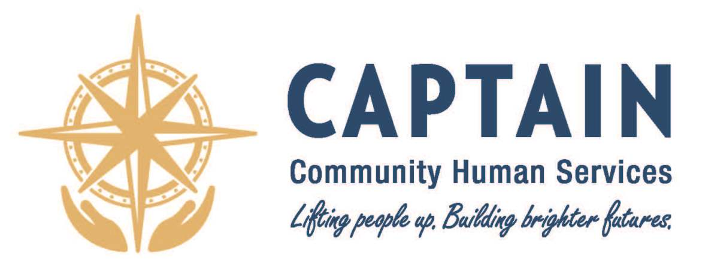
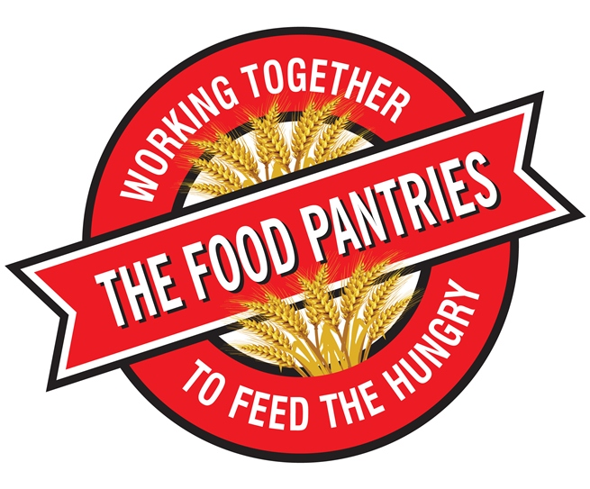
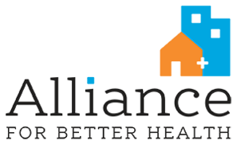
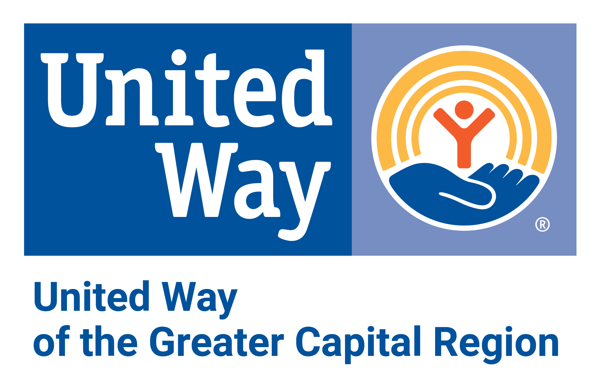

Who made this?

CAPTAIN
CAPTAIN Community Human Services
We support and empower people of all ages to reach their goals of personal growth and self-sufficiency. We Lift
People Up and Build Brighter Futures.

The Food Pantries
The Food Pantries
Established in 1979, The Food Pantries for the Capital District is a network of food pantries and hunger relief
partners in New York's Capital Region. Working together to feed the hungry we support our pantries by funding,
purchasing, collecting, and delivering food. We provide a forum for networking, coordinating services, sharing
best practices and innovations, and raising awareness. We are a voice for the local hungry. Our vision is a
hunger-free Capital Region.

Alliance
Alliance for Better Health
Alliance for Better Health engages medical and social service providers in developing innovative solutions to
promote the health of people and communities, with a goal of transforming the care delivery system into one that
incentivizes health and prevention. Established in 2015 as a Performing Provider System in the New York State
Delivery System Reform Incentive Payment (DSRIP) program, Alliance partners with more than 2,000 providers and
organizations across a six- county area in New York’s Tech Valley and Capital Region.

United Way
United Way of Greater Capital Region
United Way works to advance the common good in the Greater Capital Region by investing in the building blocks for
a good life. These are the ability to meet BASIC NEEDS, the opportunity to receive an EDUCATION that leads to a
job that pays well, a stable INCOME that provides long-term financial security, and resources to gain and maintain
good HEALTH.